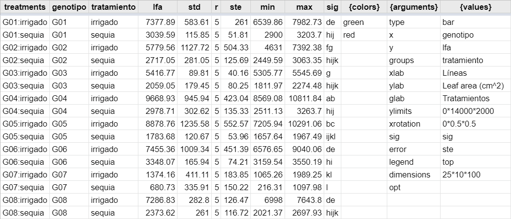
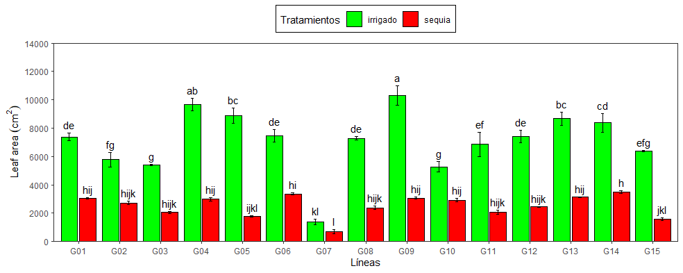
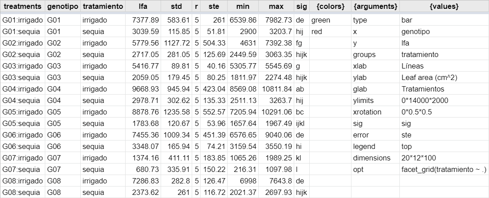

| Modules | Description |
|---|---|
| Intro | Página principal con la presentación de la aplicación. Interface para insertar el url del la hoja que se va analizar. Opciones para configurar el nombre del libro de campo (Fieldbook data) y la información resumen (Fieldbook summary). |
| Fieldbook | Incluye dos sub módulos (1) Summary, para insertar los parámetros de acuerdo al diseño experimental de la base de datos. (2) Reshape, para reformar base de datos que se realizaron con la aplicación Tarpuy
|
| Analysis | Incluye tres sub módulos (1) Modelo, análisis y diagnósticos de las variables de acuerdo al modelo seleccionado en el módulo Fieldbook, puede cambiarse las opciones de forma directa en la hoja fbsm. (2) Diagnostic, modulo para observar los supuestos estadísticos y la distribución de los datos. (3) Gsheet, para visualizar la hoja fbsm para modificar los parámetros |
| Graphics | Incluye dos sub módulos (1) Plots, gráfico de las variables exportadas en la hoja de cálculo. (2) Gsheet, para visualizar la hoja con la tabla del gráfico y modificar los parámetros |
| Multivariate | Incluye tres sub módulos (1) PCA, selección de la variables para resumen de los datos y análisis de componentes principales. (2) HCPC, Análisis de cluster de los individuos. (3) CORR, correlación de las variables numéricas de la base de datos |
Yupana es una heramienta interactiva que permite el análisis y gráfica de datos basados en diseños experimentales (Table @ref(tab:modules)).
Yupana permite:
- Análisis de datos con distintos modelos estadisticos
- Diagnostico de los modelos
- Análisis de comparación de medias de los tratamientos
- Información resumen de la comparación de los tratamientos
- Gráfica de los resultados
- Análisis multivariados
 demo
demo
 Yupana
Yupana
Base de datos
Los datos deben estar organizado en formato tidy-data.
Tener en cuenta algunas consideraciones:
- No usar caracteres extraños en la cabeceras, e.i.: %, #, &, $, °, !, ^, etc
- Los datos deben iniciar en la primera fila y columna, e.i. A1
- Evitar usar espacio entre los nombres de las variables, en reemplazo pueden usar “_” o “.”
Las columnas que esten entre corchetes “[]” serán excluidas del análisis
Módulos
Graphics
Los parámetros de los gráficos generados en la app pueden ser guardadas en hojas de cálculo de google y luego pueden ser cargadas (Table @ref(tab:param)).
Opciones de gráfico
| arguments | description | options |
|---|---|---|
| type | Tipo de gráfico | bar - line |
| x | Factor en el eje X | columna tabla |
| y | Variable numérica | columna tabla |
| groups | Factor de agrupación | columna tabla |
| xlab | Título eje X | texto manual |
| ylab | Título eje Y | texto manual |
| glab | Título de los grupos | texto manual |
| ylimits | Limites del eje Y (inicio*final*quiebres) |
texto manual |
| xrotation | Rotación de etiquetas del eje X (angulo*horizontal*vertical) |
texto manual |
| sig | Factor o variables para el texto de significancia | columna tabla |
| error | Barra de error: error estándar o desviación estandar | ste - std |
| xtext | Etiquetas del eje X (separado por comas “,”) | texto manual |
| gtext | Etiquetas de la leyenda (separado por comas “,”) | texto manual |
| legend | Posición de la leyenda | top - left - right - bottom - none |
| dimensions | Dimensión de la imagen en centímetros (largo*alto*dpi) |
texto manual |
| opt | Agregar capas adicionales. e.g. coord_flip(), theme_minimal() | texto manual |
Nota: Opciones basadas en la función: plot_smr()
Argumentos y valores

{arguments} y {values} para la generación de gráficos en la aplicación Yupana.
{arguments} y {values} de la tabla anterior.La apliación por defecto genera un gama de colores {colors} en una escala de grises. Los colores pueden ser modificados de forma manual por sus nombres en ingles o usando los valores HEX. En este caso se cambió la escala de grises por los colores verde (green) y rojo (red) (Figure @ref(fig:tparam), @ref(fig:plot)).
Incluir nuevas capas opt
Yupana a partir de la versión 0.2.0 permite la inclusión de capas adicionales a los gráficos. Puedes incluir dicha información en opt de los {arguments} (Figure @ref(fig:opt), @ref(fig:topt)).
Puedes incluir diversas capas descritas para el paquete ggplot2.
facet_grid()
facet_grid(tratamiento ~ .) en opt de los {arguments} en Yupana.